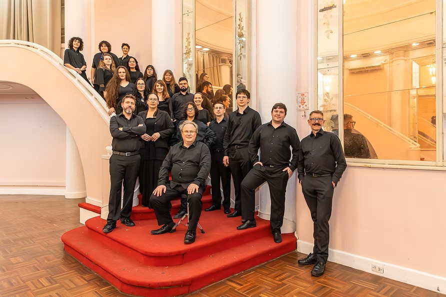
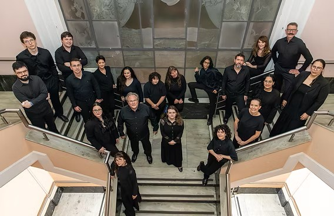

Capela Vocal
Associação de Cantores Porto-Alegrense, amantes da música e entusiastas de canto coral. Nosso repertório possui maior ênfase em clássicas obras pra coros, como também temos repertórios modernos, em múltiplas línguas.

Próximos Concertos
Apresentações oficiais na cidade de Porto Alegre
Concerto Vivaldi I
Paróquia do Redentor — Rua José do Patrocínio, 570, Cidade Baixa
Concerto Vivaldi II
Capela Nosso Senhor Jesus do Bom Fim — Av. Osvaldo Aranha, 462, Bom Fim
Apresentação na Noite dos Museus
Catedral Anglicana da Santíssima Trindade — Rua dos Andradas, 880, Centro Histórico
Concerto Natalino com Coro Jovem da OSPA
Igreja Nossa Senhora da Conceição — Av. Independência, 230, Independência

Capela Vocal • Porto Alegre / RS
Elenco do Coro
Cosmas Grieneisen
Soprano
- Adriana Carolina Broilo
- Cristina Simon
- Julia Bonai Portela
- Kariny Schoenfeldt
- Luka Millermeister Araujo
- Pablo Simon Pinho
- Samara Mendonça Gonçalves
Contralto
- Ana Francisca Grings
- Elisa Dias Mendonça
- Julia Schwingel Broilo
- Karinba Friedrich
- Maria Eduarda Schoenhofen
- Milina Sato
- Ritieli dos Santos de Campos
Tenor
- Gabriel Drese Salazar
- Gabriel Friedrich Duarte
- Ronel Alberti da Rosa
Baixo
- Philip de Lacy White
- Thiago Luiz Sousa
Contato Direto
Para convites artísticos, apresentações solenes, temporadas sinfônicas ou parcerias institucionais em Porto Alegre e turnês: